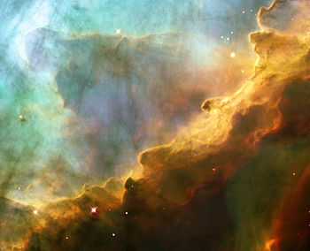
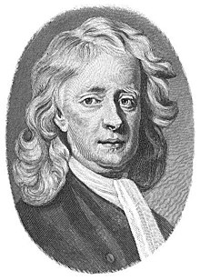
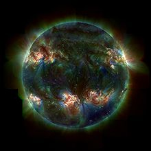
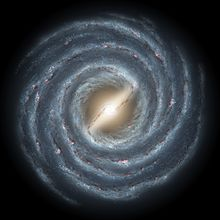
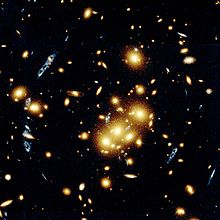
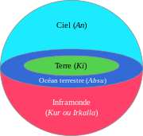
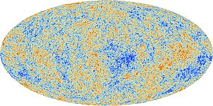

| Sous-classe de | Astronomie, physique | ||||||
|---|---|---|---|---|---|---|---|
| Pratiqué par | Astrophysicien | ||||||
| Champ | Planétologie | ||||||
| Objets | Trou noir | évolution stellaire | étoile à neutrons | matière noire | énergie noire | champ magnétique stellaire | champ magnétique planétaire |
Astronomie
L'astronomie est la science de l'observation des astres, cherchant à expliquer leur origine, leur évolution, ainsi que leurs propriétés physiques et chimiques. L'étymologie du terme astronomie vient du grec ἀστρονομία (ἄστρον et νόμος) ce qui signifie loi des astres. Avec plus de 5 000 ans d'histoire1, les origines de l'astronomie remontent au-delà de l'Antiquité dans les pratiques religieuses préhistoriques. L'astronomie est l'une des rares sciences où les amateurs jouent encore un rôle actif. Elle est pratiquée à titre de loisir par un large public d'astronomes amateurs.
Histoire
L'astronomie est considérée comme la plus ancienne des sciences1. L'archéologie révèle en effet que certaines civilisations de l'Âge du bronze, et peut-être du Néolithique, avaient déjà des connaissances en astronomie. Elles avaient compris le caractère périodique des équinoxes et sans doute leur relation avec le cycle des saisons, elles savaient également reconnaître certaines constellations. L'astronomie moderne doit son développement à celui des mathématiques depuis l'Antiquité grecque et à l'invention d'instruments d'observation à la fin du Moyen Âge. Si l'astronomie est pratiquée pendant plusieurs siècles parallèlement à l'astrologie, le siècle des Lumières et la redécouverte de la pensée grecque voient naître la distinction entre la raison et la foi, si bien que l'astrologie n'est plus pratiquée par les astronomes.
Moyen Âge
L'astronomie ne peut être étudiée sans l'apport d'autres sciences qui lui sont complémentaires et nécessaires : les mathématiques (géométrie, trigonométrie), ainsi que la philosophie. Elle sert au calcul du temps.
Époque moderne
Pendant la Renaissance, Copernic propose un modèle héliocentrique du Système solaire ayant de nombreux points communs avec la thèse de Nasir ad-Din at-Tusi, avec le De revolutionibus publié en 1543 après sa mort. Près d'un siècle plus tard, cette idée est défendue, étendue et corrigée par Galilée et Kepler. Galilée imagine une lunette astronomique, en s'inspirant des travaux du hollandais Hans Lippershey (dont la lunette ne grossissait que trois fois et déformait les objets), pour améliorer ses observations. S'appuyant sur des relevés d'observation très précis faits par le grand astronome Tycho Brahe, Kepler est le premier à imaginer un système de lois régissant les détails du mouvement des planètes autour du Soleil, mais n'est pas capable de formuler une théorie allant au-delà de la simple description présentée dans ses lois. C'est Isaac Newton qui, en formulant la loi de l'attraction des corps (la loi de la gravitation) associée à ses lois du mouvement permet finalement de donner une explication théorique au mouvement des planètes. Il invente aussi le télescope réflecteur, qui améliore les observations. Le passage du modèle géocentrique de Ptolémée au modèle héliocentrique avec Copernic / Galilée / Newton est décrit par le philosophe des sciences Thomas Samuel Kuhn comme une révolution scientifique5.
Époque contemporaine
On découvre que les étoiles sont des objets très lointains : l'étoile la plus proche du Système solaire, Proxima du Centaure, est à plus de quatre années-lumière. Avec l'introduction de la spectroscopie, on montre qu'elles sont similaires au Soleil, mais dans une grande gamme de températures, de masses et de tailles. L'existence de notre galaxie, la Voie lactée, en tant qu'ensemble distinct d'étoiles, n'est prouvée qu'au début du xxe siècle du fait de l'existence d'autres galaxies. Peu après, on découvre l'expansion de l'Univers, conséquence de la loi de Hubble établissant une relation entre la vitesse d'éloignement des autres galaxies par rapport au Système solaire et leur distance. La cosmologie fait de grands progrès durant le xxe siècle, notamment avec la théorie du Big Bang, largement supportée par l'astronomie et la physique, comme le rayonnement thermique cosmologique (ou rayonnement fossile), et les différentes théories de nucléosynthèse expliquant l'abondance des éléments chimiques et de leurs isotopes. Dans les dernières décennies du xxe siècle, l'apparition des radiotélescopes, de la radioastronomie et des moyens de traitement informatique autorise de nouveaux types d'expérimentations sur les corps célestes éloignés, par analyse spectroscopique des raies d'émission émises par les atomes et leurs différents isotopes lors des sauts quantiques, et transmis à travers l'espace par les ondes électromagnétiques. L'UNESCO décrète 2009 comme étant l'Année mondiale de l'astronomie.
Matières de l'astronomie
Astronomie solaire
L'étoile la plus étudiée est le Soleil, une petite étoile typique de la séquence principale de type spectral G2V et vieille d'environ 4,6 milliards d'années. Le Soleil n'est pas considéré comme une étoile variable, mais il subit des changements périodiques de son activité, ce qui peut être vu grâce aux taches solaires. Ce cycle solaire de fluctuation du nombre de taches dure 11 ans. Les taches solaires sont des régions plus froides que la normale qui sont associées à une activité magnétique intense6. La luminosité du Soleil a régulièrement augmenté au cours de sa vie. Aujourd'hui, il est en effet 40 % plus brillant qu'au moment où il est devenu une étoile de la séquence principale[Quand ?]. Le Soleil a également subi des changements périodiques de luminosité ayant eu un impact significatif sur la Terre7. Par exemple, on soupçonne le minimum de Maunder d'être la cause du petit âge glaciaire survenu durant le Moyen Âge8. Au centre du Soleil se trouve le cœur, une zone où la température et la pression sont suffisantes pour permettre la fusion nucléaire. Au-dessus du noyau se trouve la zone de radiations, où le plasma transporte les flux d'énergie au moyen de radiations. La couche recouvrant la zone de radiations forme la zone de convection où l'énergie est conduite vers la photosphère grâce à la convection, autrement dit, les déplacements physiques du gaz. On croit que cette zone de convection est à l'origine de l'activité magnétique qui génère les taches6. La surface extérieure du Soleil est appelée photosphère. Juste au-dessus de cette couche se trouve une mince région appelée chromosphère. Enfin se trouve la couronne solaire. Le vent solaire, un flux de plasma constitué essentiellement de particules chargées, « souffle » constamment à partir du Soleil jusqu'à l'héliopause. Il interagit avec la magnétosphère terrestre pour créer les ceintures de Van Allen9. Les aurores polaires sont également une conséquence de ce vent solaire.
Astronomie stellaire
L'étude des étoiles et de l'évolution stellaire est fondamentale pour notre compréhension de l'univers. L'astrophysique des étoiles a été déterminée grâce à l'observation et à la compréhension théorique ainsi que par des simulations informatiques. Une étoile se forme dans des régions denses de poussières et de gaz, connues sous le nom de nuages moléculaires géants. Lorsqu'ils sont déstabilisés, les fragments peuvent s'effondrer sous l'influence de la gravité pour former une protoétoile. Une région suffisamment dense et chaude provoquera une fusion nucléaire, créant ainsi une étoile de la séquence principale14. Presque tous les éléments plus lourds que l'hydrogène et l'hélium ont été créés dans le noyau des étoiles. Les caractéristiques de l'étoile résultant dépendent d'abord de sa masse de départ. Plus l'étoile est massive, plus sa luminosité est importante et plus elle videra le stock d'hydrogène présent dans son noyau rapidement. Au fil du temps, cette réserve est entièrement convertie en hélium, et l'étoile commence alors à évoluer. La fusion de l'hélium requiert une plus grande température dans le noyau, de cette façon, l'étoile s'agrandit et son noyau se densifie en même temps. Devenue une géante rouge, notre étoile consume alors son hélium. Cette phase est relativement courte. Les étoiles très massives peuvent aussi subir une série de phases rétrécissantes, où la fusion se poursuit en éléments de plus en plus lourds. Le destin final de l'étoile dépend de sa masse: les étoiles qui sont plus de 8 fois plus massives que le soleil peuvent s'effondrer en supernova ; alors que les étoiles plus légères forment des nébuleuses planétaires et évoluent en naines blanches. Ce qui reste d'une très grosse étoile est une étoile à neutrons, ou dans certains cas un trou noir15. Les étoiles binaires proches peuvent suivre des chemins plus complexes dans leur évolution, comme un transfert de masse par le compagnon d'une naine blanche pouvant causer une supernova. Les phases finales de la vie des étoiles, y compris les nébuleuses planétaires et les supernovas, sont nécessaires à la distribution de métaux dans le milieu interstellaire; sans cela, toutes les nouvelles étoiles (leur système planétaire y compris) seraient uniquement formées à partir d'hydrogène et d'hélium

Astronomie galactique
Le Système solaire orbite au sein de la Voie lactée, une galaxie spirale barrée qui est un membre important du Groupe local. C'est une masse tournante formée de gaz, d'étoiles et d'autres objets maintenus ensemble par une attraction gravitationnelle mutuelle. Étant donné que la Terre est située dans un bras extérieur poussiéreux, il y a une grande partie de la Voie lactée que l'on ne peut pas voir. Au centre de la Voie lactée se trouve le noyau, un bulbe de forme étirée qui d'après de nombreux astronomes abriterait un trou noir supermassif en son centre gravitationnel. Celui-ci est entouré de quatre bras spiraux majeurs démarrant du noyau. C'est une région active de la galaxie qui contient beaucoup d'étoiles jeunes appartenant à la population II. Le disque est entouré par un halo sphéroïdal d'étoiles plus vieilles de population I, ainsi que par une concentration relativement dense d'amas globulaires16,17. Entre les étoiles se trouve le milieu interstellaire, une région de matière éparpillée. Dans les régions les plus denses, des nuages moléculaires formés principalement d'hydrogène moléculaire contribuent à la formation de nouvelles étoiles. Cela commence avec des nébuleuses sombres qui se densifient puis s'effondrent (en un volume déterminé par la longueur de Jeans) pour former des protoétoiles compactes18. Quand des étoiles plus massives apparaissent, elles transforment le nuage en une région HII de gaz et de plasma luminescent. Le vent stellaire et les explosions de supernova servent finalement à disperser le nuage, laissant souvent derrière lui un ou plusieurs amas ouverts. Ces amas se dispersent graduellement et les étoiles rejoignent la population de la Voie lactée. Les études cinématiques de la matière présente dans la Voie lactée ont démontré qu'il y a plus de masse qu'il n'y parait. Un halo de matière noire semble dominer la masse, bien que la nature de cette matière noire reste indéterminée
Astronomie extragalactique
L'étude des objets situés en dehors de notre galaxie est une branche de l'astronomie concernée par la formation et l'évolution des galaxies ; leur morphologie et classification ; l'examen des galaxies actives ; ainsi que par les groupes et amas de galaxies. Ces derniers sont importants pour la compréhension des structures à grande échelle de l'Univers. La plupart des galaxies sont organisées en formes distinctes, ce qui permet d'établir un schéma de classification. Elles sont communément divisées en galaxies spirales, elliptiques et irrégulières20. Comme son nom l'indique, une galaxie elliptique a la forme d'une ellipse. Ses étoiles se déplacent sur une orbite choisie au hasard sans aucune direction préférée. Ces galaxies ne contiennent que peu ou pas de gaz interstellaire, peu de régions de formation d'étoiles, et généralement des étoiles âgées. On trouve généralement des étoiles dans les noyaux d'amas galactiques qui peuvent se former à partir de la fusion de plus grandes galaxies. Une galaxie spirale est organisée comme un disque plat en rotation, avec généralement un bulbe proéminent ou une barre en son centre, ainsi que des bras spiraux qui s'étendent vers l'extérieur. Ces bras sont des régions poussiéreuses de formations d'étoiles où les jeunes étoiles massives produisent une teinte bleue. Les galaxies spirales sont typiquement entourées d'un halo d'étoiles plus vieilles. La Voie lactée et la galaxie d'Andromède sont des galaxies spirales. Les galaxies irrégulières sont chaotiques en apparence et ne sont ni spirales, ni elliptiques. Environ un quart des galaxies sont irrégulières. La forme si particulière peut être le résultat d'une interaction gravitationnelle. Une galaxie active est une structure dont une partie significative de l'énergie qu'elle émet ne provient pas de ses étoiles, de son gaz ou de sa poussière. Ce type de galaxie est alimenté par une région compacte en son noyau, généralement grâce à un trou noir supermassif, pense-t-on, qui émettrait des radiations grâce aux matériaux qu'il avale. Une radiogalaxie est une galaxie active qui est vraiment très lumineuse dans le domaine radio du spectre électromagnétique et qui produit de gigantesques lobes de gaz. Les galaxies actives émettant des radiations très énergétiques incluent les galaxies de Seyfert, les quasars et les blazars. Les quasars semblent être les objets les plus lumineux de l'univers connu21. Les grandes structures du cosmos sont représentées par des groupes et des amas de galaxies. Cette structure est organisée de manière hiérarchique, dont les plus grandes connues à ce jour sont les superamas. Le tout est agencé en filaments et en murs, laissant d'immenses régions vides entre eux
Astrophysique
L’astrophysique (du grec astêr : étoile, astre et physis : science de la nature, physique) est une branche interdisciplinaire de l'astronomie qui concerne principalement la physique et l'étude des propriétés des objets de l'Univers (étoiles, planètes, galaxies, milieu interstellaire...), comme leur luminosité, leur densité, leur température et leur composition chimique. Au xxie siècle, les astronomes ont une formation en astrophysique et leurs observations sont généralement étudiées dans un contexte astrophysique, de sorte qu'il y a moins de distinction entre ces deux disciplines qu'auparavant.
(d) ChampDisciplines de l'astrophysique
L'astrophysique se compose de diverses disciplines :
- cosmologie
- planétologie
- exobiologie
- instrumentation
- physique stellaire
- héliosismologie et astérosismologie
- physique du milieu interstellaire
- plasmas astrophysiques
- physique galactique
Historique
Aussi loin que remontent les données historiques, on trouve des preuves de l’existence de l’astronomie. Pendant longtemps, l’astronomie était une discipline bien distincte de la physique. Dans la pensée aristotélicienne, le monde céleste tendait à la perfection, avec les corps célestes qui semblaient être des sphères parfaites circulant sur des orbites parfaitement circulaires, alors que le monde terrestre semble condamné à l’imperfection. Ces deux mondes ne pouvaient donc pas être liés. Aristarque de Samos (310 av. J.-C. – 230 av. J.-C.) fut le premier à mettre en avant l’idée selon laquelle le mouvement des corps célestes pouvait s’expliquer par la rotation des planètes du système solaire (dont la Terre) autour du Soleil. À l’époque, la vision géocentrique de l’univers prévalait et la théorie héliocentrique d’Aristarque fut déclarée farfelue et hérétique. Cette vision resta en place jusqu’à ce qu’un astronome nommé Nicolas Copernic ressuscite le modèle héliocentrique au xvie siècle. En 1609, grâce à la lunette astronomique qu'il avait adaptée, Galilée découvrit les quatre lunes les plus brillantes de Jupiter, et démontra qu’elles tournaient toutes autour de cette planète. Cette découverte était en complète contradiction avec le dogme de l’Église catholique de l’époque. Il n’échappa à une peine sévère qu’en prétendant que son œuvre n’était que pur travail mathématique et donc purement abstrait, contrairement à la philosophie naturelle (la physique). À partir des données précises d’observations (principalement en provenance de l’observatoire de Tycho Brahe), des recherches ont été menées pour trouver une explication théorique au comportement observé. Dans un premier temps, seules des lois empiriques ont été formulées, telles que les lois de Kepler sur le mouvement planétaire au début du xviie siècle. Quelques années plus tard, Isaac Newton réussit à faire le lien entre les lois de Kepler et la dynamique de Galilée. Il découvrit en effet que les mêmes lois régissaient la dynamique des objets sur Terre et le mouvement des astres dans le système solaire. La mécanique céleste, application de la gravité newtonienne et des lois de Newton pour expliquer les lois de Kepler sur les mouvements des planètes, fut la première unification de l’astronomie et de la physique. Après qu’Isaac Newton eut publié son livre, Philosophiae Naturalis Principia Mathematica, la navigation maritime changea radicalement. À partir de 1670, le monde entier était mesuré à partir d’instruments modernes donnant la latitude et d’horloges. Les besoins de la Marine poussaient à l’amélioration progressive des instruments et des observations astronomiques, donnant ainsi davantage de données aux scientifiques. En 1814, Joseph von Fraunhofer découvrit que la lumière du Soleil pouvait se décomposer en un spectre de lignes colorées, appelé depuis raies de Fraunhofer. Des expériences avec des gaz chauffés montrèrent par la suite que les mêmes lignes étaient présentes dans leur spectre. Ces lignes spécifiques correspondaient à un élément chimique unique. Ceci fut la preuve que les éléments chimiques présents dans le Soleil pouvaient être trouvés sur Terre. En effet, l’hélium fut d’abord découvert dans le spectre du Soleil, d’où son nom, et seulement ensuite sur la Terre. Au xxe siècle, la spectroscopie (l’étude de ces lignes spectrales) se développa, notamment grâce aux avancées de la physique quantique qui pouvait expliquer les observations expérimentales et astronomiques

Astronomie observationnelle
La majorité des observations en astrophysique sont effectuées en utilisant le spectre électromagnétique :
- la radioastronomie étudie les radiations cosmiques qui ont une longueur d’onde supérieure à quelques millimètres. Les ondes radios sont généralement émises par les objets froids, comme les gaz interstellaires ou les nuages de poussière. La radiation micro-onde du fond diffus cosmologique provient de la lumière du Big Bang qui subit un décalage vers le rouge. Les pulsars ont été détectés en premier par les fréquences micro-ondes. L’étude de ces fréquences nécessite de très gros radiotélescopes ;
- l’astronomie infrarouge étudie les radiations dont la longueur d’onde est trop grande pour être visible et plus petite que les ondes radio. Les observations en infrarouge sont généralement faites avec des télescopes similaires aux télescopes optiques. Les objets astrophysiques qui émettent principalement dans l'infrarouge sont, essentiellement, plus froids que des étoiles, comme les planètes ou bien les galaxies infrarouges par exemple ;
- l’astronomie optique est la forme la plus ancienne d’astronomie. Les instruments les plus courants sont les télescopes associés à un capteur à charge couplée ou des spectroscopes. Comme l’atmosphère terrestre interfère quelque peu avec les observations faites, l’optique adaptative et les télescopes spatiaux ont fait leur apparition afin d’obtenir la meilleure qualité d'image possible. À cette échelle, les étoiles sont très visibles, et beaucoup de spectres chimiques peuvent être observés dans la composition chimique d’étoiles, de galaxies ou de nébuleuses ;
- l’astronomie dans l'ultraviolet, les rayons X ou les rayons gamma étudie les phénomènes très énergétiques tels que les pulsars binaires, les trous noirs ou les magnétars. Ces radiations pénètrent difficilement l’atmosphère de la Terre, il n’y a donc que deux possibilités pour les exploiter, les télescopes spatiaux et les télescopes Cherenkov atmosphériques. Le RXTE, le télescope à rayons X Chandra et l’observatoire à rayons gamma Compton sont des observatoires du premier type. Le système stéréoscopique de haute énergie (HESS) et le télescope MAGIC font partie de la deuxième catégorie.
Astrophysique théorique
Les astrophysiciens utilisent une grande variété d’outils comme les modèles analytiques (tels que les polytropes pour obtenir le comportement approximatif d’une étoile) ou la simulation numérique sur ordinateur. Chaque outil a ses avantages. Les modèles analytiques d’un processus sont généralement meilleurs pour obtenir le fonctionnement interne. Les modèles numériques, eux, peuvent révéler l’existence de phénomènes et d’effets qui ne pourraient être vus autrement2,3. Les théoriciens en astrophysique essayent de créer des modèles théoriques et de comprendre les conséquences observables de ces modèles. Ceci aide les observateurs à rechercher les données qui peuvent réfuter un modèle ou aider dans le choix entre plusieurs alternatives ou modèles contradictoires. Les théoriciens essayent également de produire ou modifier des modèles pour tenir compte de nouvelles données. En cas de contradiction, la tendance générale est d'essayer de faire des modifications minimes du modèle pour l'adapter aux données. Dans certains cas, une grande quantité de données incohérentes à répétition peut mener à l'abandon total d'un modèle. Les sujets étudiés par les théoriciens en astrophysique incluent l’évolution et la dynamique stellaire, la formation des galaxies, les structures matérielles à grande échelle de l’Univers, l’origine des rayons cosmiques, la relativité générale et la cosmologie physique, avec l’aide de la théorie des cordes et la physique des particules. L’astrophysique relativiste sert d’outil pour évaluer les propriétés des structures à grande échelle. Pour ces structures, la gravitation joue un rôle important dans les phénomènes physiques étudiés et sert de base pour la physique des trous noirs et l’étude des ondes gravitationnelles. Parmi les théories étudiées et les modèles reconnus en astrophysique, on peut trouver le modèle lambda-CDM qui inclut le Big Bang, l’inflation cosmique, la matière noire et les théories fondamentales de la physique.
Quelques exemples de processus :
| Processus physique | Outil expérimental | Modèle théorique | Explique / prédit |
|---|---|---|---|
| Gravitation | Radiotélescopes | Effet Nordtvedt | Émergence d'un système planétaire |
| Fusion nucléaire | Spectroscopie | Évolution stellaire | Comment brillent les étoiles et comment se forment les éléments |
| Big Bang | Télescope spatial Hubble, COBE | Expansion de l'Univers | Âge de l'Univers |
Cosmologie
La cosmologie est la branche de l'astrophysique qui étudie l'origine, la nature, la structure et l'évolution de l'Univers.
Histoire des cosmologies scientifiques
La cosmologie scientifique établie à un instant donné dépend directement de ce que l'on connaît de l'univers. Avant le xixe siècle, l'univers connu était essentiellement réduit au seul système solaire, et la cosmologie portait donc uniquement sur la formation de celui-ci. Ce n'est qu'à partir de la première moitié du xixe siècle que la distance aux étoiles proches a commencé à être connue ou évaluée de façon relativement réaliste (à partir de 1838 grâce à Friedrich Wilhelm Bessel). L'étude de la répartition spatiale des étoiles au sein de notre galaxie a ensuite été effectuée jusqu'au début du xxe siècle. Enfin, dans les années 1920 la nature extragalactique de ce que l'on appelait alors les « nébuleuses » (aujourd'hui les galaxies) a été découverte par Edwin Hubble. Peu après, Georges Lemaître a également découvert l'expansion de l'Univers, c'est-à-dire le fait que les galaxies de l'univers s'éloignent les unes des autres, et ce d'autant plus vite qu'elles sont loin. La cosmologie telle qu'on l'entend aujourd'hui est donc l'étude de la structure, l'histoire et l'évolution d'un univers empli de galaxies à perte de vue.
La cosmologie moderne
La Terre est une planète de taille relativement modeste (environ 6 370 km de rayon), en orbite autour d'une étoile de la Séquence principale, le Soleil. Par définition, la distance Terre-Soleil est utilisée pour définir l'unité astronomique, soit environ 150 millions de kilomètres. D'autres planètes orbitent autour du Soleil. La planète la plus éloignée du Soleil (en ne comptant pas les planètes naines) est Neptune, distante d'environ 4 milliards et demi de kilomètres du Soleil, soit trente fois la distance Terre-Soleil. Le système solaire est lui-même lié à une structure, la Galaxie (dans le cas de notre galaxie : la Voie lactée), comprenant plusieurs centaines de milliards d'étoiles. L'étoile la plus proche du Soleil, Proxima du Centaure, est située à un peu plus de 4 années-lumière, soit ±38 000 milliards de kilomètres de celui-ci, soit 260 000 fois plus que la distance Soleil-Terre (UA soit l'unité astronomique). La plupart des étoiles visibles à l'œil nu dans le ciel nocturne sont à des distances de plusieurs dizaines, voire centaines d'années-lumière. Le Soleil est situé à la périphérie de la Galaxie. Il en est à environ 25 000 années lumière ; la Galaxie a un rayon environ 2 fois plus grand que cette distance, pour un diamètre d'environ 100 000 années-lumière. Ces dimensions en font une galaxie typique de l'univers.
